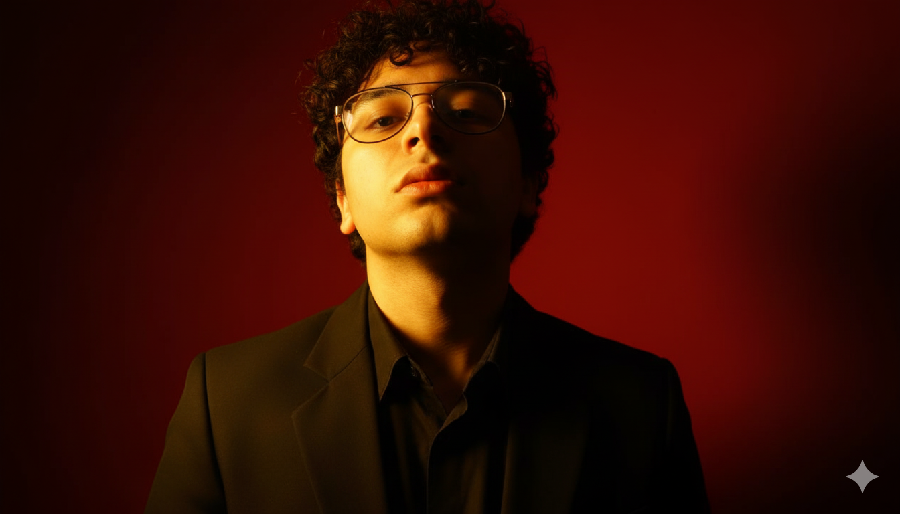

Josué Agurto García
Desarrolador Frontend
Hola soy un estudiante de la carrera Ingeniería de Sistemas de Perú, Lima PE.

Hola soy un estudiante de la carrera Ingeniería de Sistemas de Perú, Lima PE.